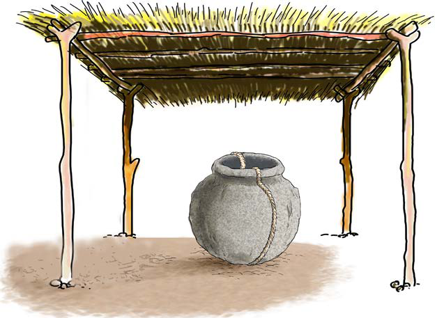

Vyombo vilivyofinyangwa vilikaushwa kivulini au kuchomwa kwa moto mkali wa kuni ili viwe vigumu. Vyombo vya mfinyanzi vilivyochomwa vilipoozwa kwa maji ya baridi. Baadhi ya wafinyanzi walivipamba vyungu kwa kuvichora kwa mapambo ya rangi vikiwa vibichi na wengine walivipamba baada ya kukauka. Kwa mfano, jamii ya Wafipa na Wakisi walipamba vyungu baada ya kukauka. Kielelezo namba 15, kinawasilisha baadhi ya vyombo vya mfinyanzi.
Kielelezo namba 16, kinawasilisha mfano wa chungu kilichofinyangwa na kukaushwa kivulini.

63